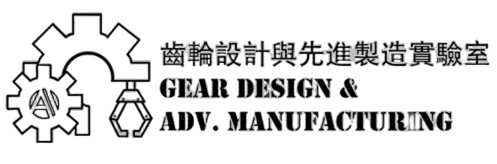
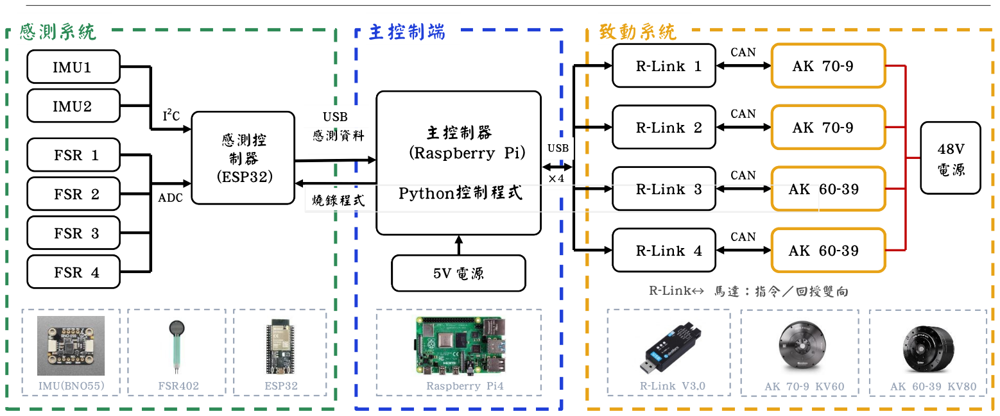
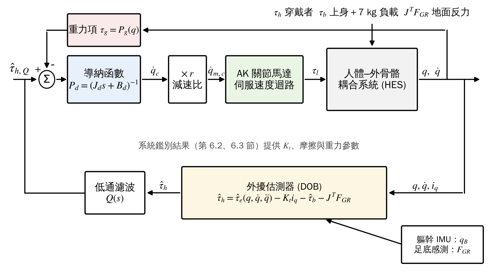
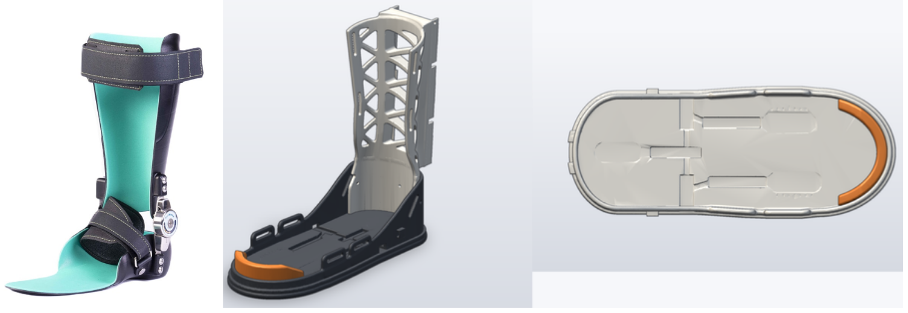
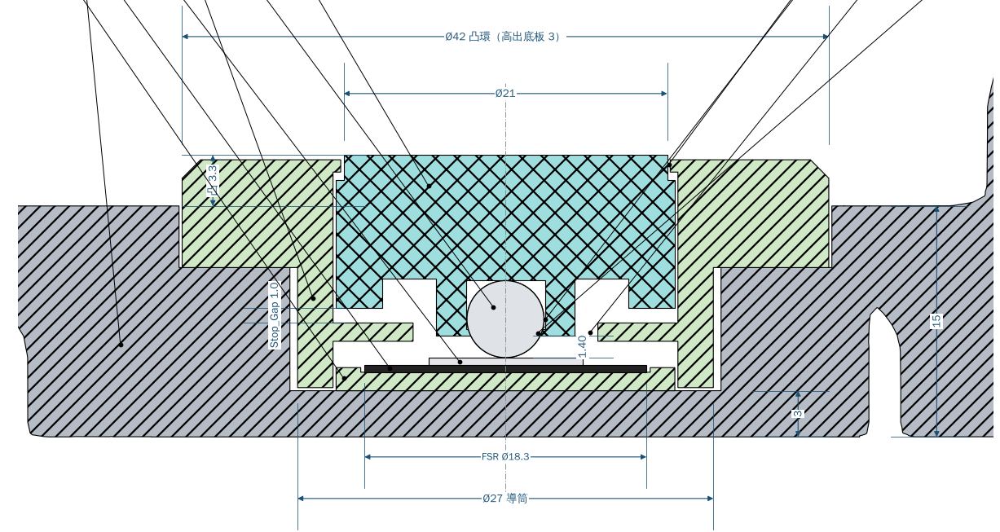
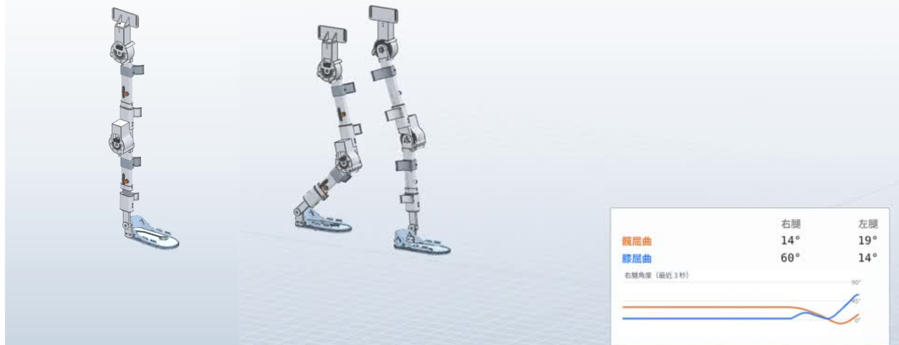
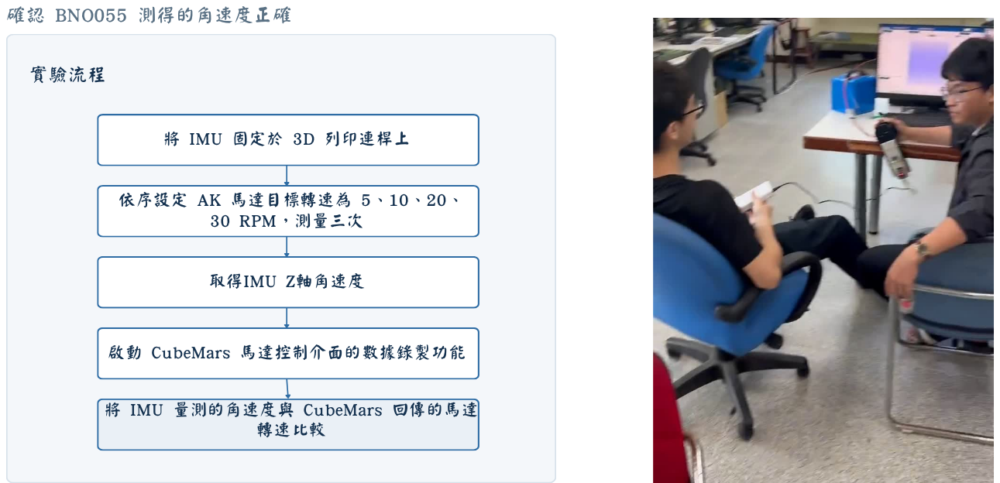
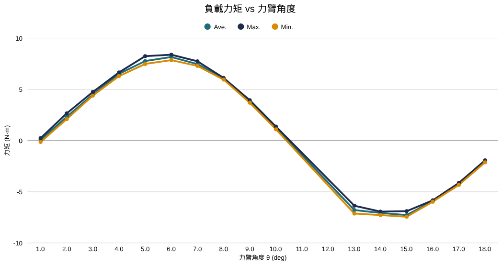
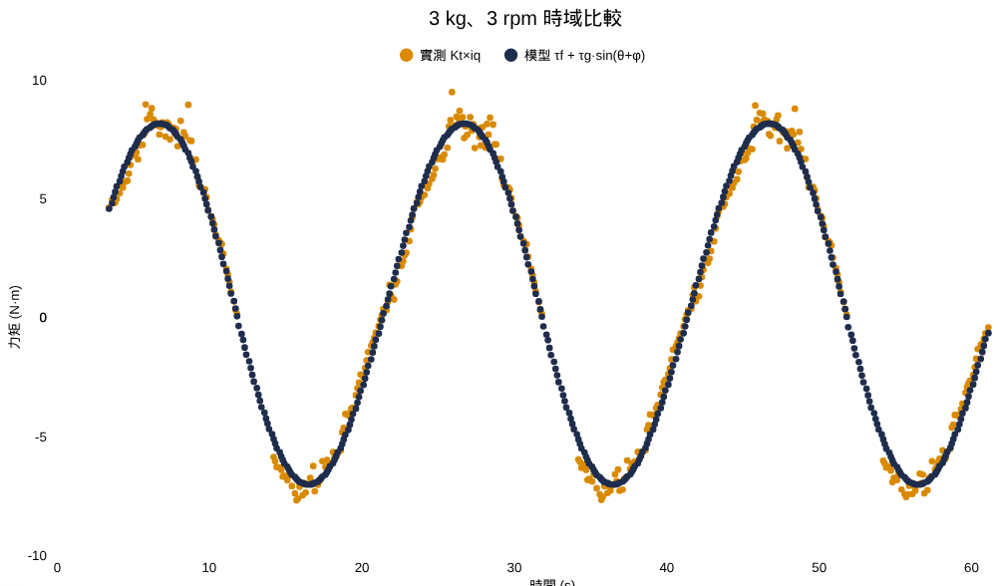
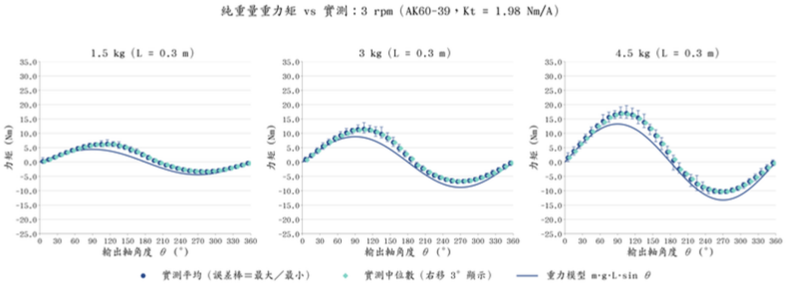

工業現場重複搬運物品容易造成作業人員下肢與腰部之肌肉疲勞與職業傷害。本專題開發一套可協助穿戴者承載7 kg搬運物之下肢外骨骼，於髖、膝關節配置CubeMars AK系列關節馬達。控制策略參考導納控制架構[1]：以外擾估測器(DOB)估測穿戴者關節力矩作為運動意圖，扣除負載與上半身重量造成之額外力矩後，經導納函數轉為關節角速度命令。由於力矩估測仰賴馬達電流換算，本專題先進行致動器系統鑑別，結果顯示AK70-9與AK60-39之等效力矩常數分別為1.24與1.98 N·m/A，與規格值1.0621與3.4616 N·m/A差異顯著；IMU角速度經修正後誤差小於±0.4%。上述結果為導納控制之參數基礎。
| 項目 | 目標 | 狀態 |
|---|---|---|
| 承載重量 | 7 kg搬運物 | 進行中 |
| 運動情境 | 平地行走、上下樓梯、蹲站 | 進行中 |
| 主動關節 | 髖 AK70-9、膝 AK60-39（雙腳共4顆） | 已選定 |
| 意圖偵測 | 外擾估測器(DOB) | 架構完成 |
| 順應控制 | 導納控制（含重力項） | 架構完成 |
| IMU角速度誤差 | < 1% | ±0.4% |
IMU與足底FSR經ESP32傳至Raspberry Pi 4主控制器，主控制器執行力矩估測與導納控制，經R-Link以CAN匯流排對四顆AK馬達下達速度命令並接收回授。

穿戴者與外骨骼視為人體–外骨骼耦合系統(HES)，以DOB由模型估測之總關節力矩扣除馬達、上半身（含7 kg負載）與地面反力項，得穿戴者力矩；經低通濾波後以導納函數轉換為角速度命令，重力項用以抑制過大之大腿擺盪[1]。



第一蹠骨頭與腳跟各配置一顆FSR 402，以TPU導槽與Ø5鋼珠將足底力集中至感測區，下沉超過1 mm由止擋分擔負載。模組化設計不需修改鞋子，用以判斷著地、離地與步態相位。

髖關節AK70-9、膝關節AK60-39；大腿長390–470 mm、小腿370–450 mm；活動範圍髖−25°～100°、膝0°～105°（與機構組合作）。

| 轉速 | 原始誤差 | 修正後 |
|---|---|---|
| 5 rpm | +3.04% | −0.38% |
| 10 rpm | +3.19% | −0.07% |
| 20 rpm | +3.50% | +0.31% |
| 30 rpm | +3.03% | −0.12% |
以AK馬達回傳轉速為參考，BNO055角速度固定偏大約3.1%，屬比例誤差，經線性回歸修正後誤差小於±0.4%；角加速度誤差約0.3%。
以力臂懸掛已知負載進行定速旋轉，於定速下慣性項消失，馬達力矩僅含摩擦與重力項，以最小平方法擬合q軸電流求得等效力矩常數Kt與摩擦力矩。


| 馬達 | 規格 Kt | 實測 Kt | 摩擦力矩 |
|---|---|---|---|
| AK70-9（髖） | 1.0621 N·m/A | 1.24 N·m/A | 0.29–0.51 N·m |
| AK60-39（膝） | 3.4616 N·m/A | 1.98 N·m/A | — |

由式(1)可知，Kt之誤差會直接轉為穿戴者力矩之估測誤差；若AK60-39沿用規格值，馬達力矩將被高估約75%，因此系統鑑別為導納控制之必要前置步驟。